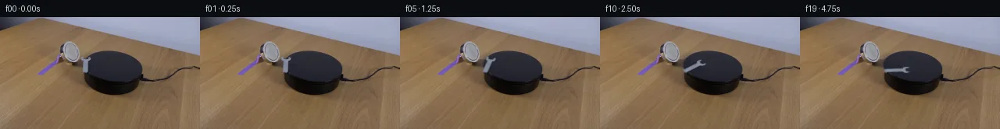

![首帧]()

Round 00
2026-11-05T10:25:40.038136+00:00像素候选变化代码 +222/−0inspection 更新
pixels e3a5b80134e974a9 · code 021da1747ab5c6c8
查看本轮 generate.py 真实 diff
--- previous/generate.py
+++ current/generate.py
@@ -0,0 +1,222 @@
+"""Local source-pixel compositing and analytic planar wrench rotation.
+No image viewer, external scene asset, trained model, or rendering engine is used.
+"""
+from pathlib import Path
+import json
+import numpy as np
+from PIL import Image, ImageDraw
+from scipy.ndimage import map_coordinates, gaussian_filter
+from artifact_io import save
+
+ROOT = Path(__file__).resolve().parent
+ANGLES = np.array([0, .7, 2.3, 5, 9, 14.2, 20.5, 27.5, 34.8, 42.3,
+ 49.8, 57, 63.7, 69.7, 74.9, 79, 82, 84, 85, 85.5])
+PIVOT = np.array([110.0, 69.0])
+FORESHORTENING = .62
+H, W = 144, 256
+Y, X = np.mgrid[:H, :W]
+SOURCE = np.array(Image.open(ROOT/'first_frame.png').convert('RGB'))
+A = SOURCE.astype(np.float64)
+
+
+def surface_background():
+ """Infer only the pixels previously hidden by the wrench, near the rim."""
+ cx, cy, rx, ry, phi = 143.830782, 63.858894, 37.916542, 20.038695, .110809504
+ c, s = np.cos(phi), np.sin(phi)
+ dx, dy = X-cx, Y-cy
+ distance = np.sqrt(((c*dx+s*dy)/rx)**2+((-s*dx+c*dy)/ry)**2)
+ # Approximate distance to the elliptical boundary in image pixels.
+ edge = (1-distance)*25
+ coverage = np.clip(edge+.5, 0, 1)
+ wood = A.copy()
+ plate = A.copy()
+ for y in range(49, 75):
+ # Row-wise neighboring wood carries the existing magnet's cast shadow.
+ wood_ref = A[y, 102].copy()
+ if y >= 56:
+ wood_ref = A[y, 104].copy()+np.array([2, 1.5, 1])
+ for x in range(102, 120):
+ wood[y,x] = wood_ref - max(0,x-102)*np.array([1.15,.88,.46])
+ # Sample source surface along the same row, away from the wrench.
+ ref = A[y,120:128].mean(0)
+ if y <= 70:
+ plate[y,x] = ref-np.array([.25,.25,.25])*max(0,120-x)
+ else:
+ plate[y,x] = ref
+ return wood*(1-coverage[...,None])+plate*coverage[...,None]
+
+
+def make_sprite():
+ inferred = surface_background()
+ support = np.zeros((H,W),bool)
+ # Coordinate envelope comes from RGB inspection of the two tips and handle.
+ for y in range(51,72):
+ if y <= 52:
+ support[y,103:108] = True
+ support[y,112:117] = True
+ elif y == 53:
+ support[y,103:108] = True
+ support[y,111:118] = True
+ elif y == 54:
+ support[y,103:117] = True
+ elif y == 55:
+ support[y,104:117] = True
+ elif y == 56:
+ support[y,105:115] = True
+ elif y < 70:
+ support[y,105:115] = True
+ elif y == 70:
+ support[y,105:114] = True
+ else:
+ support[y,108:112] = True
+ diff = A-inferred
+ reference = np.array([132.,141.,157.])
+ v = reference-inferred
+ alpha = np.clip((diff*v).sum(2)/(v*v).sum(2).clip(1),0,1)*support
+ # Fully covered metal face pixels retain their original, varied RGB texture.
+ core = np.zeros((H,W),bool)
+ core[52:54,104:106] = True
+ core[52:54,113:116] = True
+ core[54,104:116] = True
+ core[55,105:114] = True
+ core[56:70,107:112] = True
+ core[70,108:112] = True
+ alpha[core] = 1
+ alpha[alpha < .035] = 0
+ background = A.copy()
+ active = alpha > 0
… diff truncated; 135 more lines …